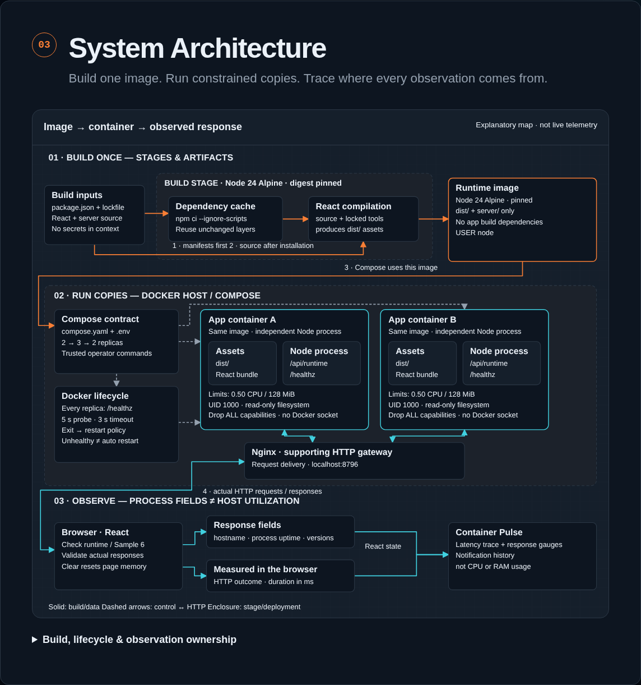
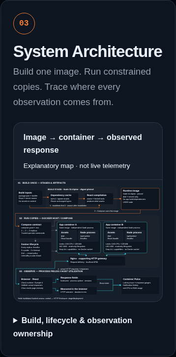
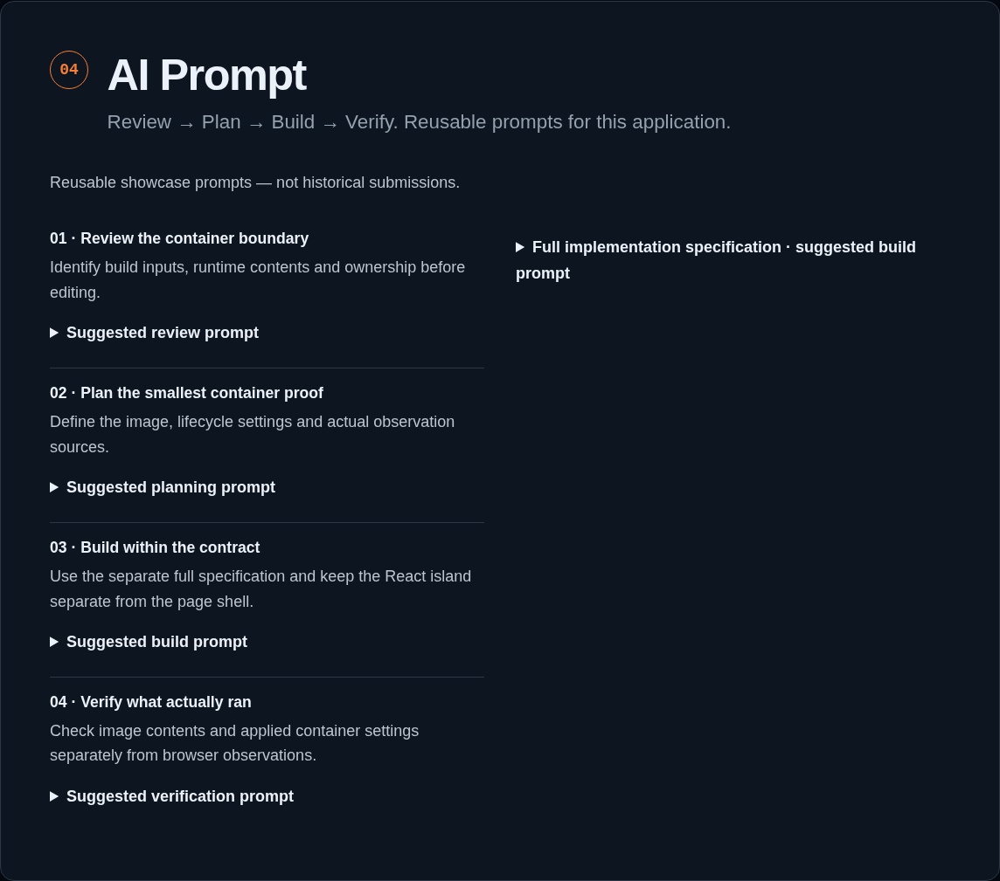
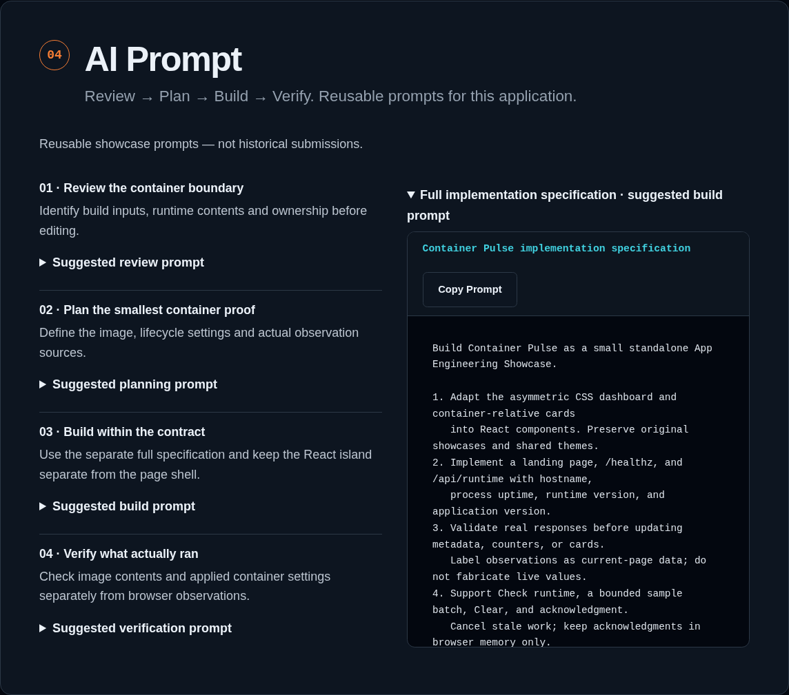
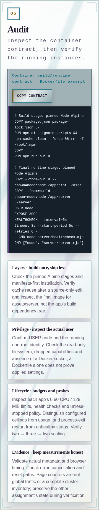

Private local technical evidence · 2026-11-06T06:31:56.809318+00:00
Container Pulse — Architecture Revision QA
Technical QA complete · independent final-snapshot reviews pending
Scoped revision of System Architecture, AI Prompt and Audit. The map explains build/image contents, Compose lifecycle, constrained replicas and observation provenance. It is explanatory—not live telemetry. Working System functionality and infrastructure remain unchanged.
Verification
| Area | Status | Actual evidence / scope |
|---|---|---|
| Source tests | Pass | 73/73; includes literal equality of all five public prompt blocks. |
| Infrastructure regressions | Pass | 22/22; unchanged deployment/source ownership. |
| Actual Docker acceptance | Pass | 2 → 3 → 2; restored two healthy replicas. Week5 state unchanged. Restart policy inspected; no restart-disruption experiment claimed. |
| Browser rendering and controls | Pass | 200/200; Chromium 156.0.8078.4, Firefox 157.0; seven themes, both modes, seven widths plus native disclosure/copy/keyboard checks. |
| Rendered-coordinate comparison | Pass | 196/196; nodes, text and connector endpoints share the same composition. This overlaps the primary viewport matrix; do not add the totals. |
| Bounded implementation specification | Pass | 480px viewport; 1332px scroll content; native scrolling and real Copy target. |
| Served build identity | Pass | All 46 production files match local dist byte-for-byte. |
| Protected sources | Pass | 817 earlier-coursework/Resume files unchanged; Sections01/02/06/07 byte-identical; three older/broad masters unchanged. |
| Complete architecture master | Pass | App-Engineering-Showcase-Master-Prompt-v1.2.md; 70 document checks, 13 lifecycle/scenario checks, 4 ownership/tracking checks. Document checks are not runtime tests. |
| Specification review | Pending | Independent final-snapshot sign-off pending. |
| Code/security review | Pending | Independent final-snapshot sign-off pending. |
| Visual approval / integration / publication | Pending | Current standalone revision only. No Resume integration, cross-showcase rollout, publication or submission performed. |
Fresh Lighthouse — this Docker-served snapshot
| Profile | Performance | Accessibility | Best practices | SEO |
|---|---|---|---|---|
| Mobile | 66 | 100 | 100 | 100 |
| Desktop | 99 | 100 | 100 | 100 |
CLI audits used isolated Chromium with mobile/desktop emulation, not physical devices or branded Chrome DevTools. Mobile CPU-calibration warnings are retained in the original reports; scores are measurements, not a guarantee. Theme-layout coverage does not certify accessibility for every appearance combination. Earlier scores belong to historical revisions.
Observed corrections and retained attempts
- Shortened overflowing labels and moved a connector away from a boundary heading.
- Restored section ownership data attributes so inherited compact Audit and bounded-prompt styles apply; retained native disclosures/default states rather than boxed accordion replacements.
- Isolated SVG tracking and enabled geometric text rendering after a cross-width check exposed responsive inherited character spacing. Final normalized glyph bounds are stable to numerical precision.
- Corrected a clipboard-status predicate affected by CSS uppercase rendering; actual clipboard/complete native-selection checks remain separate from transient labels.
- Reproduced and corrected the appendix's missing short Build prompt using only literal public code texts.
- Incomplete development runs and strict pre-calibration geometry attempts remain under earlier-attempts and are excluded from final acceptance counts. No failed or lower-score run was substituted for a pass.
Actual final screenshots
Full-document captures with atomic document-coordinate crops avoid sticky-header contamination. Small map fonts at narrow widths are intentional uniform scaling; the native ordinary-text explanation remains available.










Original evidence
- Source test output
- Infrastructure test output
- Real Docker acceptance
- Browser matrix
- Rendered-coordinate matrix
- Served build identity
- Preservation checks
- Reviewed-source candidate fingerprints
- Complete-master contract checks
- Master scenarios/preservation
- Master ownership/tracking regression
- Original mobile Lighthouse HTML
- Original desktop Lighthouse HTML
- Original mobile Lighthouse JSON
- Original desktop Lighthouse JSON
Boundaries
No claim of exhaustive security/accessibility certification, physical-device testing, live CPU/RAM measurement, restart-disruption testing, complete replica discovery from browser samples, Resume integration, cross-showcase rollout, public deployment or academic submission. The final human visual checkpoint remains separate.